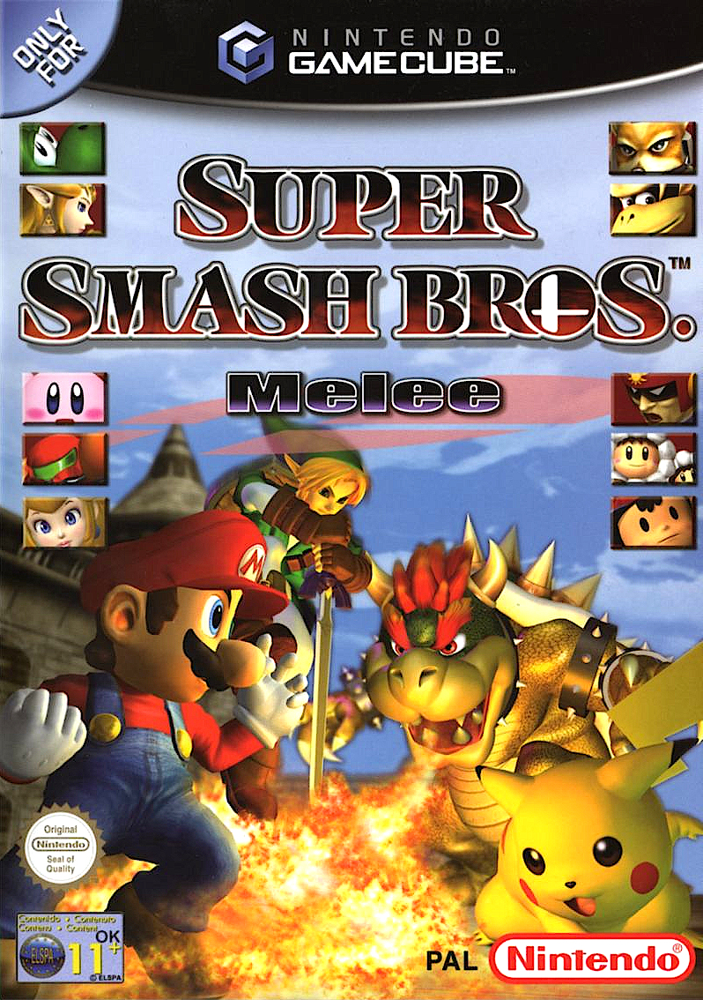
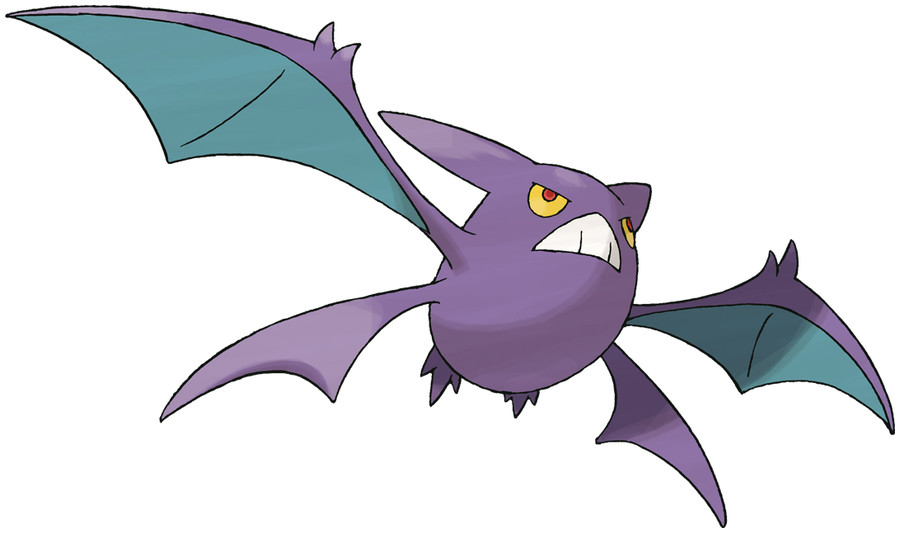
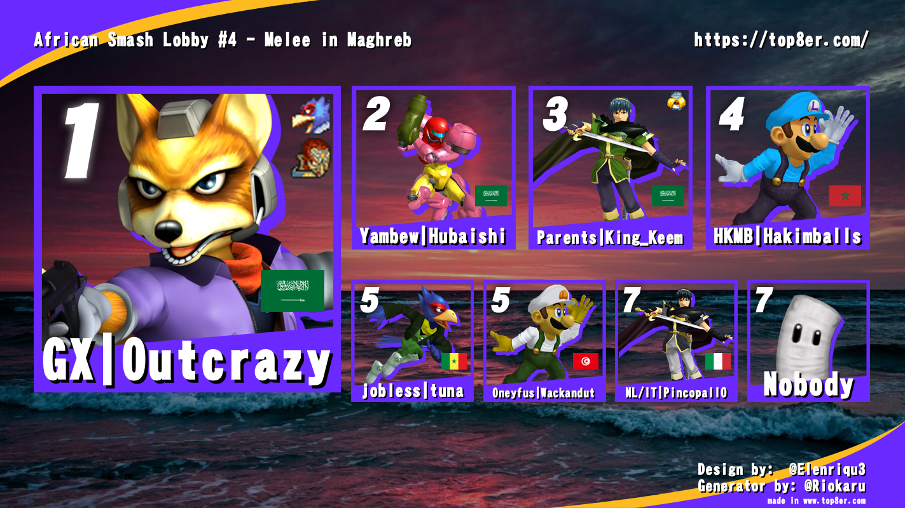
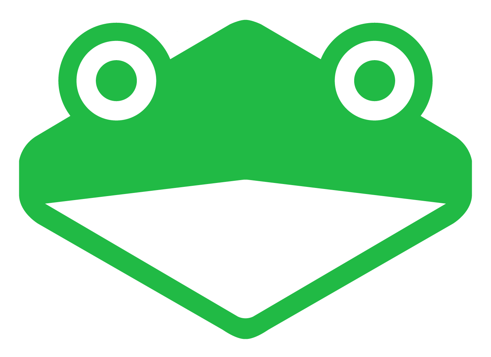

Cos'é Super Smash Bros. Melee?
Super Smash Bros. Melee è un gioco di combattimento sviluppato da Nintendo per la GameCube, uscito nel 2001 in Giappone e negli Stati Uniti, nel 2002 in Europa.
Il gioco è noto per il suo gameplay incredibilmente tattico, che richiede abilità e strategia per dominare il campo di battaglia.
Il mio personaggio preferito è Marth: è uno dei personaggi migliori del gioco, noto per la sua abilità nel combattimento a distanza grazie alla sua lunga lama e al suo spacing micidiale.
Super Smash Bros. Melee (SSBM) é anche noto per avere molti bug, essenziali per il gioco competitivo ad alti livelli.
Alcuni dei bug più famosi includono:
Gioco spesso a SSBM con gli amici ogni sera; sono abbastanza bravo, modestamente, e ho un canale su YouTube dove condivido momenti di gioco.

Cos'è Crobat?
Crobat è un Pokémon introdotto nella seconda generazione (Oro e Argento per Game Boy). Si evolve da Golbat quando raggiunge un certo livello di amicizia.
"Succhia il sangue alle sue vittime nell'oscurità. Le sue zanne sono così affilate che i suoi morsi sono indolori e le vittime non se ne accorgono." - Pokémon Ultra Sole
"Si nutre del sangue di persone e Pokémon. Se rimane senza anche solo per poco, si indebolisce al punto di non riuscire più a volare." - Pokémon Ultra Luna
Statistiche:
- HP: 85
- Attacco: 90
- Difesa: 80
- Attacco Speciale: 70
- Difesa Speciale: 80
- Velocità: 130
- Totale: 535
Pokedex:
- Numero dex: 169
- Altezza: 1,8 m
- Peso: 75,0 kg
- Tipo: Veleno / Volante
- Specie: Pokémon Pipistrello
- Colore dex: Viola
Tipi:
- Debolezze: Elettro, Ghiaccio, Psico, Roccia
- Normale: Acciaio, Acqua, Buio, Drago, Fuoco, Normale, Spettro, Volante
- Resistenze: Folletto, Veleno, Coleottero, Erba, Lotta
- Immunitá: Terra
In altre lingue:
| Lingua | Nome |
|---|---|
| 🇮🇹 Italiano | Crobat |
| 🇬🇧 Inglese | Crobat |
| 🇪🇸 Spagnolo | Crobat |
| 🇯🇵 Giapponese | クロバット (Kurobatto) |
| 🇩🇪 Tedesco | Iksbat |
| 🇫🇷 Francese | Nostenfer |
| 🇰🇷 Coreano | 크로뱃 (keurobaet) |
| 🇨🇳 Mandarino | 叉字蝠 (Chā zì fú) |
| 🇪🇬 Arabo | كروات (Kruwat) |
| 🇷🇺 Russo | Кробат (Krobat) |
| 🇮🇳 Hindi | क्रोबेट (Krobet) |

Le mie avventure con Super Smash Bros. Melee
La mia introduzione a Melee
Ho iniziato a giocare a Super Smash Bros. Melee a fine marzo del 2024, sul portatile di mio padre che mi aveva regalato quando aveva cambiato computer. Ho usato questo setup per la scuola e per svago. Per giocare a Melee usavo un controller per Nintendo Switch collegato con un cavo USB.
Non ho giocato molto a Melee, perché era difficile e le altre persone con cui giocavo erano esperte, mentre io avevo 13 anni. Di conseguenza non giocavo molto in estate o nel tempo libero.
Ho ripreso a giocare a Melee verso la fine dell'anno, quando ho cambiato setup per uso personale, ma poi ho smesso di giocare per un po'.
Tutto è cambiato il 4 marzo 2025.
Quel giorno uno sconosciuto mi ha invitato a giocare a Melee, ma io ho rifiutato l'invito. Però lui ha insistito e mi ha convinto. Dopo aver giocato qualche partita, ho scoperto che avevamo la stessa età e la stessa abilità. Inoltre abitava in Tunisia, quindi avevamo la stessa fascia oraria (ideale per organizzare partite).
Da allora ci vediamo quotidianamente per giocare a SSBM e altri giochi. Siamo ancora tutt'ora in contatto e tutti e due carichiamo video di Smash Bros Melee sui nostri canali YouTube: il mio e quello del mio amico.
I suoi personaggi preferiti sono Jigglypuff e Luigi.
La mia esperienza nei tornei
Nella mia carriera di Melee ho partecipato a due tornei: uno in estate del 2025 e uno nell'aprile del 2026.
Nel primo torneo c'erano 15 partecipanti: ho perso tutte le partite nelle qualifiche e ho ottenuto l'ultimo posto (15°).
Nel secondo torneo c'erano 7 partecipanti e ho ottenuto il settimo posto. Però ho vinto una sola partita, diversamente dal primo. (7°)
In entrambi i tornei non ho mai vinto alcun set. In sintesi: risultati scarsissimi, arrivato ultimo in entrambe le occasioni.

Il mio ultimo torneo

I miei obiettivi
Come ho documentato qui sopra, ho perso tutti i tornei di SSBM a cui ho partecipato. Il mio obiettivo è migliorare costantemente e ottenere risultati migliori nei prossimi tornei. Mi accontento di qualsiasi cosa che non sia l'ultimo posto. Mi accontenterei anche di vincere il mio primo set competitivo.
Un altro mio obiettivo è far crescere il mio canale YouTube raggiungendo un numero maggiore di iscritti e visualizzazioni, così da superarli rispetto a quelli del mio amico.
Inoltre vorrei anche invitare i miei spettatori a entrare nel mio Discord.
Come potete immaginare, sono molto ambizioso, ma sono anche determinato a raggiungere i miei obiettivi. Per realizzarli, mi impegno al massimo ogni giorno. Per supportarmi, iscrivetevi al mio canale YouTube e entrate nel mio Discord.